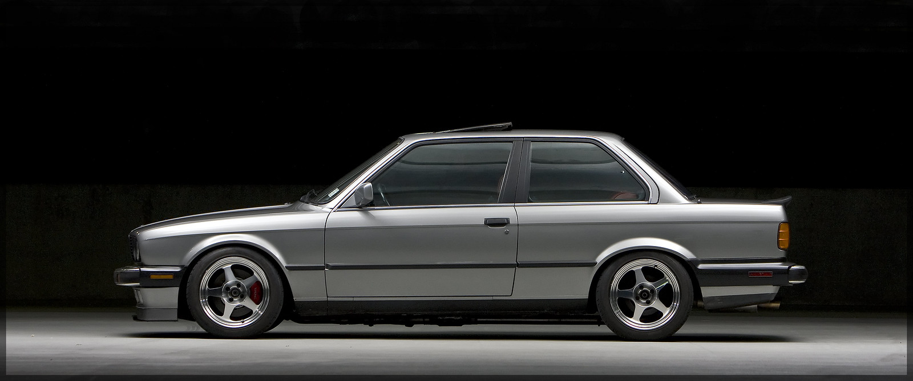
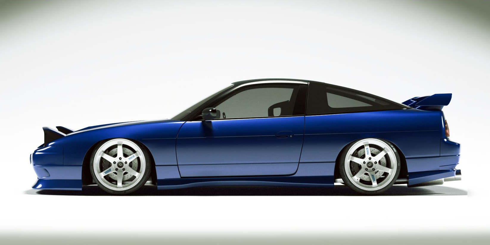
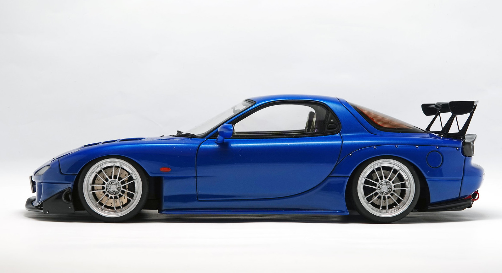
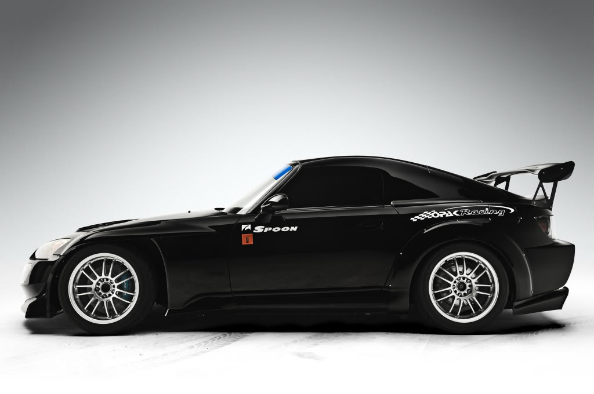

Products
1982 - 1994 3 Series (E30)
-
Supersprint Performance Muffler
This Supersprint performance exhaust for the M42 E30 318is gives a nice throaty and ripping sound. The Supersprint muffler is much freer-flowing than the stock exhaust which frees up horsepower in addition to improving the sound. This is a true cat-back system that bolts on to the stock catalytic converter and uses all of the same factory gaskets and hangers.
$858.00
-
Mtech II Front Spoiler
Front spoiler for E30 Mtech 2. This is an original part an it is made from elastic plastic like material that will not crack as easy as fiberglass.
$1,609.00
-
ZHP Weighted Shiftknob
The Genuine BMW ZHP "Shorty" Shift Knob is a great addition to any BMW interior from 1982 onward. Yes, that's right; any BMW after 1982 can take advantage of this 5-speed ZHP-style shift knob. The knob sits much lower than the factory knob and is weighted for smoother engagement, making it an excellent addition to any short shift kit or even on its own. The knob has an M-inspired shift pattern with an alloy base collar for an ultra-clean "OE Plus" look. Aside from the feel, the best feature of this knob is that it pops into place just as a factory knob should - no generic set screws!
$95.64
-
Supersprint Exhaust Headers
This header system features an X-pipe after the headers to improve exhaust flow and scavenging. The X-pipe helps the exhaust gas mix and then flow into the rest of the exhaust. This header system has a bend in the outlets from the X-pipe to fit to the stock E30 catalytic converter (cut the stock E30 downpipes and these clamp in place). This makes them a direct swap from the stock manifolds and downpipes and an easy fitment for E30s with the stock exhaust.
$2,025.99
1989 - 1992 240SX (S13)
-
Yashio Factory SR20 manifold
By using 3.5mm thick SUS304 stainless steel and narrowing the inner diameter of the cylinders to increase flow velocity, Yashio Factory succeeded in improving the response of their exhaust manifold at both low rpm and high rpm. As the torque is considerably higher than the previous model, it is the strongest exhaust manifold Yashio Factory has produced to date.
$1,276.83
-
East Bear Style Mirrors
Although East Bear has long since ended production on their aero mirrors for early S chassis, we're now offering reproduced versions in either FRP or Carbon Fiber.
$245.00
-
Ground Control Coilover System
Proudly made in the USA, Ground Control's coilover system for the S13 improves handling and style with Koni struts with custom housings, Koni shocks, Eibach springs, bump stops, shock mounts, and camber plates.
$2,999.00
-
Garrett GT2871R Turbocharger
A tried and true turbo application for the SR20, Garrett's GT series is a great choice for those who want to keep their build period correct, while still achieving horsepower numbers around 350 to 400hp.
$1,822.07
1991 - 1997 Mazda RX7 (FD)
-
RE Amemiya Diffuser
The RE Amemiya Diffuser Pro has been developed to deliver real additional downforce as can be used in high speed circuit, drift and other competitions.
$742.07
-
GReddy Spec LS Intercooler Kit
The Greddy Spec LS intercooler is the latest development, to replace the Spec M in the cost effective range of Greddy intercoolers. Offering lower weight than the Spec M combined with the lower cost.
$384.82
-
OS Giken Super Lock LSD
The OS Giken Super Lock LSD has been designed for high levels of durability and performance whilst still providing a comfortable driving experience.
$987.38
-
Cusco Strut Brace
The Cusco Type OS is a lightweight aluminium strut brace, easy bolt-on and offers substantial handling improvement.
$92.16
Honda S2000
-
J's Racing Rear Strut Bar
The J's racing rear strut bar increases rigidity between the rear strut towers for improved cornering and overall handling performance.
$175.09
-
Toda Sports Injection Kit
The latest version of the Toda Sports Injection Kit features improved intake runners and either 45 or 50mm diameter throttle bodies.
$2,369.70
-
Voltex Street Version Front Bumper
Voltex offers some of the best Aero Parts for your S2000. Prepare your car for the track and the street with this amazing looking kit from the extremely popular Voltex brand.
$1,753.14
-
Spoon 4-2-1 Exhaust Manifold
The ultimate Spoon exhaust manifold, the 4-2-1 manifold has been designed for the best improvement of torque and power for higher capacity performance NA high revving Honda engines. The exhaust manifold has been extensively flow tested and performance tested to provide the best gains available.
$1,083.92